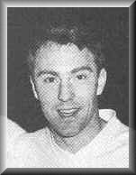
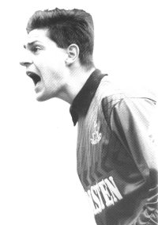

Great Players
Great Players
He had been at the club since 1936, had become
coach in 1955, then
assistant manager, and on October 11th, 1958
was appointed manager. Bill Nicholson took hold of the reins for what was
to be one
of the most successful eras ever witnessed at
Tottenham Hotspur F.C.
In his first match in-charge, spurs hammered
Everton 10-4 at White Hart Lane. Bill went on to build the "super Spurs,"
the Lilywhites
who marched on to greatness. Many spurs fans
still remember the players who made up this remarkable team, including
Danny
and John White, who was tragically killed by
lightening in July 1964. The signings led to a turn-around in the club’s
fortunes.
In 1960 Nicholson said that he had a side well-prepared
to brag glory. He was right! In 1960-61 we became the first club to achieve
the F.A.Cup and League Double in modern times.
We won the first 11 games of the campaign on the trot, drew the 12th, won
the
European Trophy with a European Cup Winners’
Cup triumph over Athletico Madrid in 1963. Jimmy was signed in November
1961 from A.C.Milan for 99,999 Pounds and scored over 200 league goals
for spurs in 321 appearances. Add that to his tally in Cup-ties and European
matches, and he averaged almost a goal a game! In the Cup Winners Cup competition
of 1963-64, Dave Mackay broke his leg against Manchester United in the
Second Round---and again in his first match after recovery. The "Iron Man"
of football refused to let the injurty beat him. He fought back to fitness;
the team then being rebuilt in 1967 with players such as: Northern Ireland
keeper Pat Jennings; Alan Mullery (later to take over as captain from Mackay);;
Alan Gilzean; Jimmy Greaves; Terry Venables; Mike England; Frank Saul;
Joe Kinnear; Cyril Knowles; and

Jimmy Greaves
 Bobby Mimms